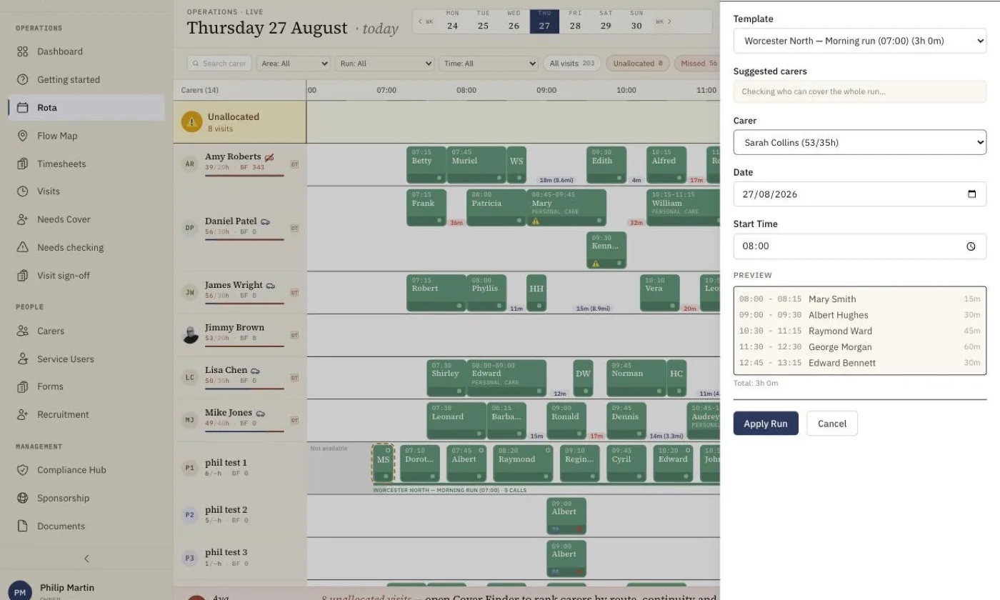

Care Rota and Scheduling Software for UK Home Care Agencies
Eliminate rota chaos. Give every coordinator a clear, visual command centre that turns hours of manual scheduling into minutes of confident decision-making, purpose-built for UK domiciliary agencies.
Stop Fighting Your Rota. Start Running It.
The visual drag-and-drop rota gives coordinators complete control over every visit, every carer, and every hour of the day. See availability at a glance, move visits in seconds, and let the system handle the complexity of travel times, contract hours, and regulatory constraints, so you can focus on delivering outstanding care. Travel between visits gets its own tools too, see our route planning and mapping features. And if you're building your first schedule from scratch, our step-by-step guide on how to build a home care rota walks through the whole process.

Why Coordinators Love Our Scheduling
Every feature is designed around the real daily pressures of running a home care rota, not generic project management.
Visual Drag & Drop
Move visits between carers with a simple drag. See your entire day, week, or month at a glance.
Run Templates
Create recurring visit patterns once and apply them across weeks. Stop rebuilding the same rota every Monday.
Real-Time Availability
See who's available, who's on leave, and who's approaching overtime, all in real time.
Colour-Coded Status
Instantly spot scheduled (navy), in-progress (amber), completed (green), missed (red), and cancelled (grey) visits.
Travel Time Intelligence
Factor in actual travel times between visits so carers aren't rushed and service users aren't kept waiting.
Conflict Detection
Automatic alerts when you double-book a carer, schedule outside their availability, or exceed contract hours.
See Every Visit Unfold in Real Time
The Visit Flow Map plots every carer and every visit on an interactive map. Watch visits progress through the day, spot late arrivals instantly, and understand travel patterns across your patch, all from one screen.

Run Builder: Save a Round Once, Reuse It Every Week
Run Builder sits at the centre of advanced scheduling and automation in homecareOS. Select a set of visits on the rota, click Save as Run, and that round is stored as a named template, for example "Monday AM - BN1 Round". Next time you need it, Apply Run asks for the template, a carer, a date and a start time, then creates every visit at its correct relative timing, assigns that carer as lead, and sends them a push notification so they know the work is theirs. Pushes are held back for visits more than 36 hours away, so nobody gets pinged about calls that are still days off.
Applied runs behave like any other visits on the rota. Travel-time pills between consecutive visits, backed by Mapbox, show whether a round is genuinely drivable. The Plan view gives you drag-and-drop adjustment with an Unassigned row for anything still waiting on a carer. Copy week carries a settled week forward in one click. And when you want the whole week generated for you, the AI Rota Builder is the Pro step up. Run Builder itself is included on the free plan.

Care run scheduling lets a home care agency save a round of visits once and reuse it week after week, instead of rebuilding the same rota by hand every Monday. In homecareOS, a coordinator selects a set of visits on the rota and clicks Save as Run to store them as a named template, such as a Monday morning round covering one postcode area. When the round is needed again, Apply Run takes that template plus a carer, a date and a start time, then creates every visit at its correct relative timing, assigns the chosen carer as lead and sends them a push notification, with pushes held back for visits more than 36 hours away. Once applied, run visits are ordinary visits, so they flow through to GPS check-in, care records, pay and invoicing like everything else on the rota. That makes repeat rounds planning a one-click job rather than a weekly chore.
Everything You Need for Effortless Scheduling
From canvas-rendered time grids to GPS-verified check-ins, every detail has been engineered for speed, clarity, and control.
Canvas-rendered time grid (06:00-22:00)
A high-performance canvas grid spans the full care day, giving coordinators a single view of every visit across every carer without lag or jank.
30-minute scheduling increments
Visits snap to 30-minute blocks, the standard unit in UK home care, making it fast to build rotas that match real-world service patterns.
Virtual scrolling for 80+ carers
Only visible rows are rendered, so the rota stays smooth and responsive even with 80 carers and 480 visits on screen.
Unallocated visit highlighting
Visits without an assigned carer stand out in dark orange so nothing slips through the cracks, even on the busiest days.
Multi-carer visits (double-ups, shadows)
Schedule two or more carers on the same visit with distinct roles (lead, support, shadow, or supervisor), all from one visit card.
Supervisor spot-check scheduling
Add spot-check observations directly to any visit. Supervisors see their spot-check rota alongside their regular schedule.
GPS-verified check-in/check-out
Carers confirm arrival and departure with GPS location, giving you an accurate record for compliance, billing, and safeguarding.
Last-minute cancellation handling
When a visit is cancelled at short notice, the system immediately flags the gap and suggests available carers who can be reassigned.
Carer preference matching
Respect service user preferences automatically. The system prioritises preferred carers and flags when a non-preferred carer is assigned.
Holiday and sickness cover
When a carer goes on leave or calls in sick, their visits are instantly highlighted for reassignment, with the AI cover finder one click away.
Visit pattern recurrence
Set up recurring visit patterns (daily, weekly, or custom) and let the system generate future visits automatically, saving hours every week.
Mobile-responsive rota view
Check and adjust the rota from any device. Managers can make schedule changes on the go without needing to be at their desk.
The Cost of Manual Scheduling
Every week without proper scheduling software, your agency leaks time, money, and morale. Here's what the numbers say.
The scheduling engine tackles what operational-research literature calls the home health care routing and scheduling problem, the well-studied challenge of balancing travel, time windows and workload that our AI optimises.
See the evidence →Care Rota Software: Frequently Asked Questions
Cost, compliance, cover and switching, answered.
Ready to Take Control of Your Rota?
Book a personalised demo and see how homecareOS scheduling can save your coordinators hours every week.
Compare homecareOS to your current software
See how we stack up against every major UK home care platform, feature by feature, transparent pricing, no fluff.